تحميل السلسلة بصيغة مصورة : PDF
تحميل السلسلة بصيغة نصية: DOCX
تحميل جميع كتب المؤلف بصيغة مصورة : PDF
تحميل جميع كتب المؤلف بصيغة نصية: DOCX
وهي كتب في الرد على الفكر المتطرف من خلال مصادره، وتنقسم إلى ثلاثة أقسام:
القسم الأول: كتب علمية ذات طابع أكاديمي، استعرضت فيها التراث السلفي ومواقفه من القضايا المختلفة مع ما تقتضيه الكتابة العلمية من مناهج، وفيه ستة كتب، هي بمثابة مادة علمية ضرورية وكافية لكل من يريد محاورة هذا الاتجاه، وهذه عناوينها:
1. هكذا يفكر العقل السلفي
2. التراث السلفي تحت المجهر
3. كلكم كفرة
4. السلفية.. والوثنية المقدسة
5. السلفية.. والنبوة المدنسة
6. رسول الله.. والقلوب المريضة
القسم الثاني: كتب تحوي مقالات وسجالات مختلفة تتعلق بالمواقف من السلفية وغيرهم من المتطرفين، أو في الدعوة للوحدة الإسلامية ومواجهة الطائفية، وغيرها:
1. ولا تفرقوا.
2. عقول معطلة
3. ورثة إبليس
4. دعاة على أبواب جهنم
5. أوهام وحقائق
6. القرآن والأيدي الآثمة
7. حوارات حصرية مع قيادات عصرية
8. دعوها فإنها منتنة
القسم الثالث: كتب ذات طابع أدبي علمي، وهي محاولة تبسيط كل الردود على السلفية بشكل مبسط على شكل حوارات وروايات وقصص، وهي تشمل باقي كتب المجموعة وهذه عناوينها:
1. اعترافات هارب من سجون الوهابية
2. لحوم مسمومة
3. شيخ الإسلام في قفص الاتهام
4. الطائفيون والحكماء السبعة
اعترافات هارب من سجون الوهابية
الكتاب: اعترافات هارب من سجون الوهابية
المؤلف: أ.د. نور الدين أبو لحية
الناشر: دار الأنوار للنشر والتوزيع
الطبعة: الثانية، 1437 هـ
عدد الصفحات: 263
للمطالعة: هنا
لمطالعة الكتاب من تطبيق مؤلفاتي المجاني وهو أحسن وأيسر: هنا
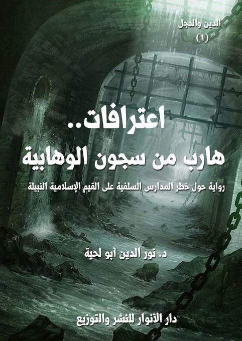
التعريف بالكتاب
كاتب هذه الاعترافات رجل كتب له في فترة من حياته أن يتبنى الفكر الوهابي، ويدعو إليه، ويستميت في دعوته، ولكن الله بفضله ومنه وكرمه قيض له من يخرجه من كل تلك السجون التي وقع فيها، وقد تعرض لكثير من الأذى بسبب خروجه.
وهو – إذ يحمد الله على فضله- يسعى من خلال هذه السلسلة، كما يسعى من خلال غيرها من السلاسل أن ينبه إخوانه من الوهابيين إلى استعمال عقولهم والرجوع إلى الحقيقة، فلا شيء أجمل من الحقيقة.
الكتاب: لحوم مسمومة
المؤلف: أ.د. نور الدين أبو لحية
الناشر: دار الأنوار للنشر والتوزيع
الطبعة: الثانية، 1437 هـ
عدد الصفحات: 232
للمطالعة: هنا
لمطالعة الكتاب من تطبيق مؤلفاتي المجاني وهو أحسن وأيسر: هنا
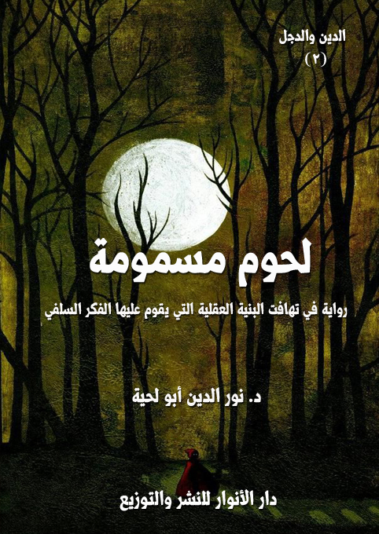
التعريف بالكتاب
هذه الرواية الحوارية البسيطة تحاول أن تعبر عن البنية العقلية والفكرية للتيارات السلفية من خلال مصادرها التي تعتمدها، ورجالاتها الذين تثق فيهم.. ونحن لم نفعل شيئا سوى أن أضفنا بعدا فنيا يقرب لنا الصورة.. أما ما عدا ذلك فهي بضاعتهم التي يعرضونها في كتبهم ومواقعهم وقنواتهم وكل ما لديهم من إمكانات إعلامية ضخمة.
والرواية تنقسم إلى قسمين:
في القسم الأول، نرى مواقف الاتجاه السلفي من كل ما أفرزته الأمة من تيارات ومدارس وتوجهات صوفية وكلامية وعلمية وغيرها.
والقسم الثاني، نرى البديل الذي يضعه الاتجاه السلفي لتلك التيارات، أو الصورة التي يريد أن يصور بها هذا الدين.
الكتاب: القرآن والأيدي الآثمة
المؤلف: أ.د. نور الدين أبو لحية
الناشر: دار الأنوار للنشر والتوزيع
الطبعة: الثانية، 1437 هـ
عدد الصفحات: 148
للمطالعة: هنا
لمطالعة الكتاب من تطبيق مؤلفاتي المجاني وهو أحسن وأيسر: هنا
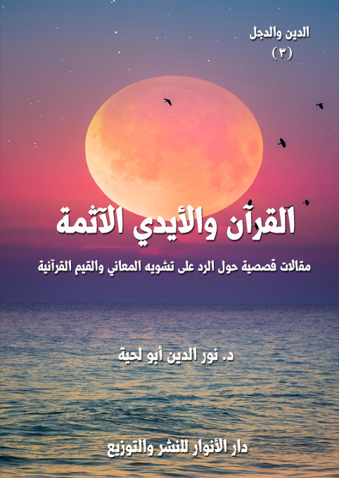
التعريف بالكتاب
في هذه المقالات القصصية نحاول أن نتلمس بكل هدوء الانحرافات التي جعلت المسلمين ينحرفون عن هدي كتابهم، بل يشوهونه.. فيحولونه من كتاب هداية وتبصرة وذكرى وموعظة إلى كتاب تاريخ وأسطورة وخرافة وشعوذة وإرهاب.. أو يعطلون معانيه.. أو يحرفونها تحريفا شديد.
الكتاب: دعاة على أبواب جهنم
المؤلف: أ.د. نور الدين أبو لحية
الناشر: دار الأنوار للنشر والتوزيع
الطبعة: الثانية، 1437 هـ
عدد الصفحات: 128
للمطالعة: هنا
لمطالعة الكتاب من تطبيق مؤلفاتي المجاني وهو أحسن وأيسر: هنا
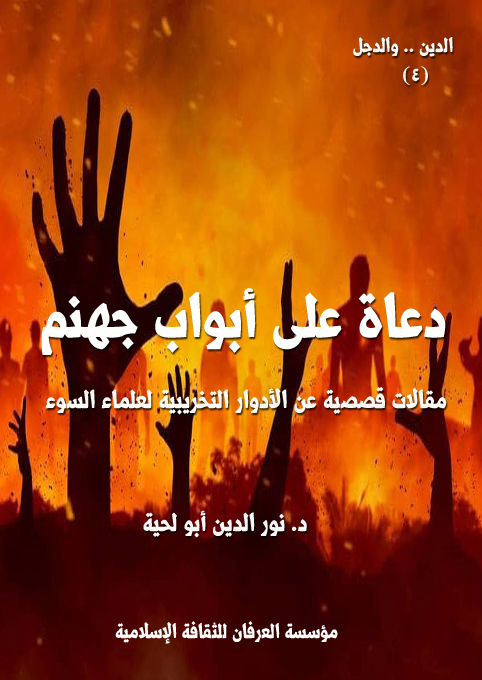
التعريف بالكتاب
في هذه المقالات القصصية حاولنا أن نربط بين ما ورد في القرآن الكريم من حديث عن علماء السوء، وأدوارهم التخريبية في الأمم السابقة، وكيف ورث علماء السوء من هذه الأمة تلك الخلال، وراحوا ينفذونها بدقة.
الكتاب: حوارات حصرية مع قيادات عصرية
المؤلف: أ.د. نور الدين أبو لحية
الناشر: دار الأنوار للنشر والتوزيع
الطبعة: الثانية، 1437 هـ
عدد الصفحات: 122
للمطالعة: هنا
لمطالعة الكتاب من تطبيق مؤلفاتي المجاني وهو أحسن وأيسر: هنا
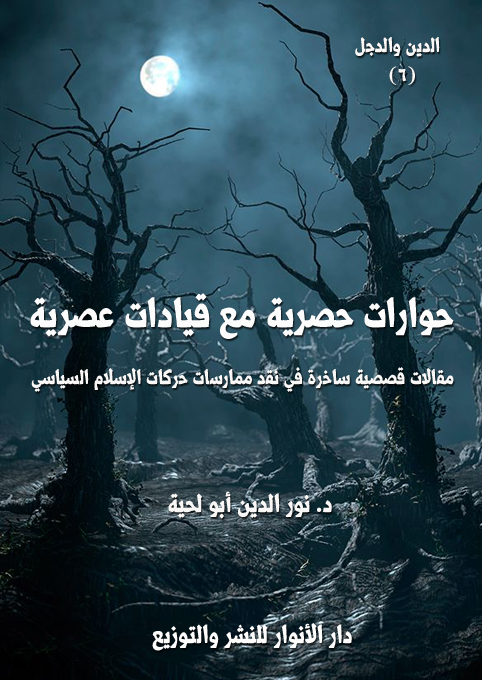
التعريف بالكتاب
في هذه المقالات القصصية الساخرة حوارات افتراضية مع جماعات الإسلام السياسي سواء كانت تتبنى منهج التغيير بالآليات الديمقراطية، أو باستعمال العنف، وفيها نقد علمي لأطروحاتها الفكرية، وللآليات التي تنفذ بها مشاريعها، وقبل ذلك نقد لتصوراتها عن الدين ودوره في الحياة.
الكتاب: رسول الله.. والقلوب المريضة
المؤلف: أ.د. نور الدين أبو لحية
الناشر: دار الأنوار للنشر والتوزيع
الطبعة: الأولى، 1437 هـ
عدد الصفحات: 128
للمطالعة: هنا
لمطالعة الكتاب من تطبيق مؤلفاتي المجاني وهو أحسن وأيسر: هنا
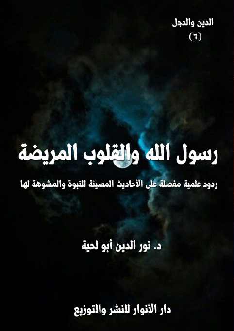
التعريف بالكتاب
يحاول هذا الكتاب أن يكشف بعض المؤامرات التي حيكت للانحراف بالصورة المقدسة الجميلة لرسول الله صلى الله عليه وآله وسلم والتي أمرنا بأن نقتدي بها ونجعلها مثلنا الأعلى.
ذلك أنه تسلل إلى تراثنا، وخاصة كتب الحديث ما يجعل من رسول الله صلى الله عليه وآله وسلم شخصا مختلفا تماما عن الشخص الذي صوره القرآن الكريم، وصورته السنة النبوية الصحيحة.
وقد قام بهذه الوظيفة التشويهية الخطيرة أصحاب القلوب المريضة، الذين ذكر القرآن الكريم وجودهم في عهد رسول الله صلى الله عليه وآله وسلم، وبين مواقفهم المختلفة من الحقائق والمعجزات الباهرات التي كانوا يرونها رأي العين.. لكنهم لسقمهم لا يبصرونها، لأن عيونهم الممتلئة بالعمش، وأنوفهم المزكومة تحول بينهم وبين إدراك الحقائق كما هي.
والمشكلة التي حصلت بعد ذلك هي تصورنا أن هذا الصنف من الناس قد زال بمجرد وفاة رسول الله صلى الله عليه وآله وسلم.. ومن هذه الثغرة الأمنية الخطيرة تسلل هؤلاء ليشوهوا المعاني السامية للدين، فيحولوا سماحته عنفا، وسلامه حربا، وصفاءه كدورة، وسعيه لتحقيق كل القيم النبيلة إلى سعي لحربها والتنفير منها، وقد أعانهم على ذلك انقطاع الوحي الذي كان يكشف خططهم، ويحذر من مؤامراتهم.
الكتاب: السلفية.. والوثنية المقدسة
المؤلف: أ.د. نور الدين أبو لحية
الناشر: دار الأنوار للنشر والتوزيع
الطبعة: الأولى، 1437 هـ
عدد الصفحات: 250
للمطالعة: هنا
لمطالعة الكتاب من تطبيق مؤلفاتي المجاني وهو أحسن وأيسر: هنا
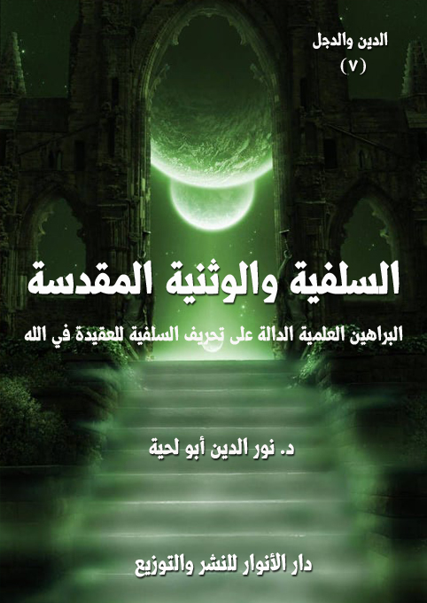
التعريف بالكتاب
يتناول هذا الكتاب ـ عبر الوثائق والأدلة الكثيرة ـ الصورة التي ترسمها المدارس السلفية لله سبحانه وتعالى، وهي صورة موغلة في التجسيم والتشبيه، ومتناقضة تماما مع الرؤية التنزيهيه التي نزل بها القرآن الكريم، ودل عليها قبل ذلك العقل والفطرة السليمة.
ولا يكتفي الكتاب بوصف تلك الصورة من خلال الروايات التي يعتمد عليها السلفية أو أهل الحديث في كتبهم، بل يضم إليها محاولة البحث عن العلل والدوافع ونحوها، والتي يتضح من خلالها منهج التفكير السلفي في التصورات العقدية، والرؤية الكونية، والذي سرى تأثيره بعد ذلك في التصورات والمواقف المختلفة.
بالإضافة إلى ذلك كله يحاول الكتاب أن يعرض التأثيرات اليهودية على العقيدة السلفية، والتي نبه القرآن الكريم إلى خطورتها، وحذر الأمة من أن تقع فيما وقع فيه سلفها من بني إسرائيل وغيرهم من التجسيم والتشبيه.
الكتاب: السلفية.. والنبوة المدنسة
المؤلف: أ.د. نور الدين أبو لحية
الناشر: دار الأنوار للنشر والتوزيع
الطبعة: الأولى، 1437 هـ
عدد الصفحات: 205
للمطالعة: هنا
لمطالعة الكتاب من تطبيق مؤلفاتي المجاني وهو أحسن وأيسر: هنا
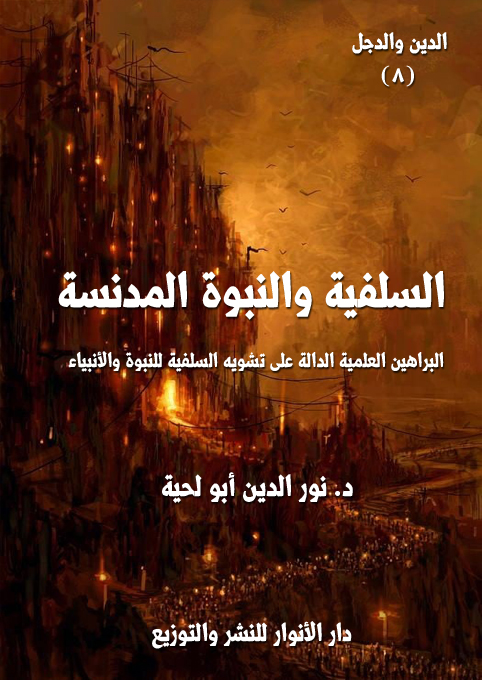
التعريف بالكتاب
يتناول هذا الكتاب ـ من خلال الأدلة والوثائق الكثيرة ـ التصورات التي تحملها المدرسة السلفية عن النبوة والأنبياء عليهم الصلاة والسلام، وهي تصورات مستمدة من التراث الإسرائيلي الذي فسر به القرآن الكريم، وكتب به التاريخ، ووضعت على أساسه العقائد.
ولذلك، فقد كان لتصورات اليهود لأنبيائهم، وما ذكروه عنهم من انحرافات عقدية وأخلاقية تأثيره الكبير في المدرسة السلفية التي أجاز أئمتها الكبار الرواية عن بني إسرائيل، بل أجازوا الرجوع لكتب بني إسرائيل نفسها.
ولهذا نرى تصورات السلفية للنبوة تختلف عن التصورات التي ذكرها القرآن الكريم، والتي دل عليها العقل، ودل عليها معه الذوق السليم، والفطرة الطاهرة.
وهذا الكتاب يحاول بالبينات الواضحات، ومن خلال المصادر المعتمدة لدى المدرسة السلفية تبيين تلك الصورة المشوهة التي يحملونها عن الأنبياء عليهم الصلاة والسلام.
الكتاب: هكذا يفكر العقل السلفي
المؤلف: أ.د. نور الدين أبو لحية
الناشر: دار الأنوار للنشر والتوزيع
الطبعة: الأولى، 1437 هـ
عدد الصفحات: 328
للمطالعة: هنا
لمطالعة الكتاب من تطبيق مؤلفاتي المجاني وهو أحسن وأيسر: هنا
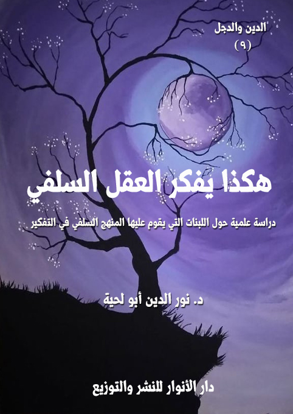
التعريف بالكتاب
يتناول هذا الكتاب ـ من خلال الأدلة والوثائق الكثيرة ـ اللبنات التي يقوم عليها المنهج السلفي في التفكير، وهي سبعة:
الرجال.. لا الحقائق: فالعقل السلفي ينطلق من صناعة أصنام السلف التي يتلقى عنها كل حقائق الدين، ويسلم لها تسليما مطلقا.
الحشو.. لا التحقيق: فالعقل السلفي يجمع كل ما روي عن سلفه من متناقضات.. ويسلم لها جميعا.
الرواية.. لا الدارية: فالعقل السلفي يهتم بالحفظ، أكثر من اهتمامه بالفهم.. ويهتم بالرواية أكثر من اهتمامه بالتحقيق.
التوهم.. لا التعقل: فالعقل السلفي نتيجة بنائه الروائي يعتمد في تفكيره على الخيال، ولهذا حول العقيدة التنزيهية إلى عقيدة تجسيمية تصويرية يتسنى له فهمها.
الحسية.. لا المعنوية: فالعقل السلفي يغلب الجسد على الروح، والشهوة على العقل، والبهيمية على الإنسانية، والحرفية على المقاصدية.
الشدة.. لا اللين: أو القسوة بدل الرحمة، أو العنف بدل الرفق، وهو ناشئ من غلبة السبعية على الإنسانية، وغلبة العدوانية على السلمية في العقل السلفي.
المدنس.. لا المقدس: فالعقل السلفي يختلط لديه المدنس بالمقدس، ويصعب عليه التمييز بينهما، ولذلك يسلم لهما جميعا، فيتحول المقدس بذلك إلى مدنس.
الكتاب: التراث السلفي تحت المجهر
المؤلف: أ.د. نور الدين أبو لحية
الناشر: دار الأنوار للنشر والتوزيع
الطبعة: الأولى، 1437 هـ
عدد الصفحات: 418
للمطالعة: هنا
لمطالعة الكتاب من تطبيق مؤلفاتي المجاني وهو أحسن وأيسر: هنا
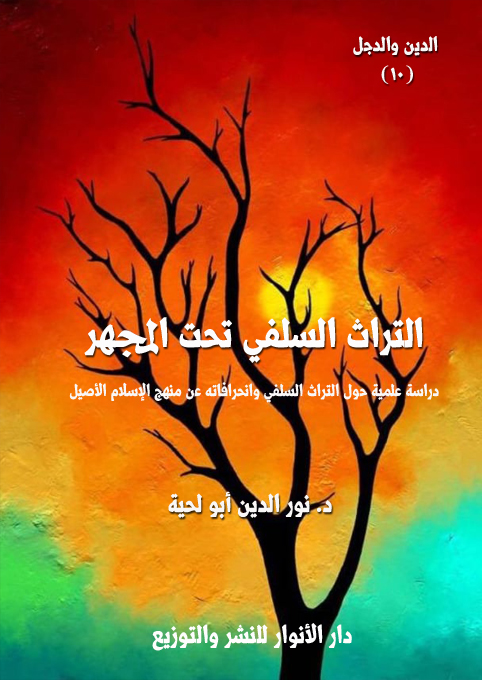
التعريف بالكتاب
يتناول هذا الكتاب عرضا موجزا للتراث السلفي في أهم مجالاته من علوم القرآن والحديث والعقيدة والفقه والسيرة والتاريخ والعلوم العقلية والعلوم الكونية.
وهو يسلط مجهر النقد على ما تضمنه هذا التراث من انحرافات عن المنهج القرآني في عرض الحقائق والتعامل معها.
وهو يوظف للدلالة على ذلك الكثير من الشواهد والأدلة والأمثلة التي تكفي لبيان ما جره هذا التراث على الأمة من ويلات ونكبات وتخلف وانحراف عن الدين الإلهي الأصيل.
وهو فوق ذلك كله نصيحة لأصحاب هذه المدرسة لمراجعة تراثها وتنقيته وتطهيره من تلك المعارضات التي تضع الحوائل الكثيرة بينها وبين الدين الأصيل الذي دل عليه القرآن الكريم أولا، ودلت عليه السنة المطهرة ثانيا، ودل عليه معهما العقل السليم الذي لا يمكن أن يفهم الدين إلا به.
الكتاب: كلكم كفرة
المؤلف: أ.د. نور الدين أبو لحية
الناشر: دار الأنوار للنشر والتوزيع
الطبعة: الأولى، 1437 هـ
عدد الصفحات: 418
للمطالعة: هنا
لمطالعة الكتاب من تطبيق مؤلفاتي المجاني وهو أحسن وأيسر: هنا
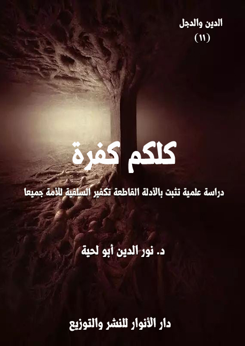
التعريف بالكتاب
يحاول هذا الكتاب ـ من خلال الأدلة والوثائق الكثيرة ـ إثبات المدى الذي وصل إليه التكفير السلفي بحق الأمة جميعا بمدارسها العقدية والفقهية والصوفية والحركية.. بالإضافة لطوائفها المتعددة من أهل سنة وشيعة وإباضية وغيرهم.
والنتيجة التي وصل إليها هي أن التكفير السلفي ـ سواء المطلق منه أو المعين ـ يشمل الأمة جميعا، ولا يستثنى منه أحد من الناس، حتى السلفية أنفسهم، وفيما بينهم نجد هذه الظاهرة، حيث نرى كل مدرسة تطبق مناهجها التكفيرية على غيرها من المدارس.
وهو يكشف تلك الحيل والخدع التي يمارسها المدافعون عن السلفية حين يحاولون رفع هذه التهمة عنهم من خلال عرض مقولاتهم المختلفة والمتناقضة والمرتبطة بالأحوال المختلفة.
الكتاب: شيخ الإسلام في قفص الاتهام
المؤلف: أ.د. نور الدين أبو لحية
الناشر: دار الأنوار للنشر والتوزيع
الطبعة: الأولى، 1437 هـ
عدد الصفحات: 435.
للمطالعة: هنا
لمطالعة الكتاب من تطبيق مؤلفاتي المجاني وهو أحسن وأيسر: هنا
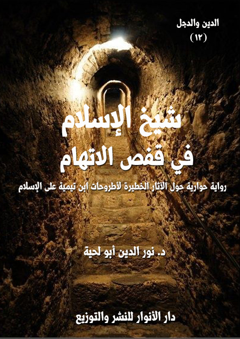
التعريف بالكتاب
تحاول هذه الرواية من خلال الأدلة والوثائق الكثيرة إثبات الجنايات التي جناها ابن تيمية على الإسلام الأصيل، سواء من ناحية تشويهه للعقائد في الله التي هي أصل أصول الدين، والتي حولها إلى عقائد تجسيم وتشبيه ووثينة.. أو من ناحية تشويهه للرسالة والرسل ومن يتعلق بهم من أولياء الله وأصفيائه.. أو من ناحية صراعه مع الأمة بل مع البشرية، ونشره للفتن بينها.
ذلك أن ابن تيمية ليس مجرد رجل عاش في القرن السابع الهجري، ثم مات بعدها مثله مثل سائر الناس.. بل هو رجل لا يزال يعيش بيننا، نراه في كل محل، ونسمع به في كل مكان، وتتحدث عنه كل القنوات، وتغرد به كل الألسنة.
الكتاب: ورثة إبليس
المؤلف: أ.د. نور الدين أبو لحية
الناشر: دار الأنوار للنشر والتوزيع
الطبعة: الأولى، 1437 هـ
عدد الصفحات: 128.
للمطالعة: هنا
لمطالعة الكتاب من تطبيق مؤلفاتي المجاني وهو أحسن وأيسر: هنا
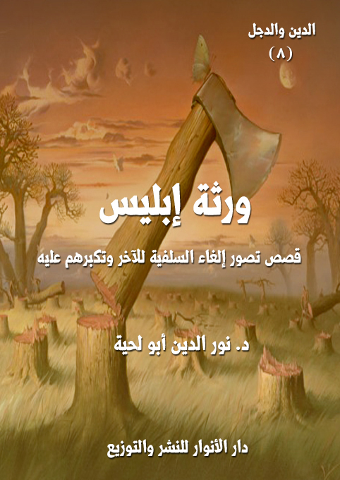
التعريف بالكتاب
ورثة إبليس هم أولئك الذين زعموا لأنفسهم احتكار الدين.. بل احتكار الكتاب والسنة.. بل احتكار الله ورسوله.. وراحوا بكل ما لديهم من أدوات الحقد والكراهية التي ورثوها من إبليس يجلسون على عروشهم الشيطانية يصنفون الناس بحسب أهوائهم وأمزجتهم.. فيكفرون ويبدعون ويضللون.. ثم يفتون الفتاوى الخطيرة التي ملأت أنهار المسلمين دماء.. وحولت حياتهم دمارا وخرابا.
وبعبارة صريحة لا لبس فيها ولا غش، فإن [السلفية] هي هذه الطائفة التي اختارت لنفسها أن ترث كبرياء إبليس وعتوه طغيانه واحتقاره لغيره..
لأن إبليس وإن قال كلمته الخطيرة: أنا خير منه.. مرة واحدة.. فإن هؤلاء السلفية يرددونها كل يوم، وفي كل حين، ومع كل الناس.. بل إنهم لا يتعاملون مع العالم إلا من آفاق هذه الخيرية التي يزعمونها لأنفسهم.. فلذا تراهم يعاقبون مخالفيهم بالهجر والاحتقار والتكفير والتقتيل، كما تصور إبليس أنه عاقب آدم بعدم السجود له.
الكتاب: ولا تفرقوا
المؤلف: أ.د. نور الدين أبو لحية
الناشر: دار الأنوار للنشر والتوزيع
الطبعة: الأولى، 1437 هـ
عدد الصفحات: 128.
للمطالعة: هنا
لمطالعة الكتاب من تطبيق مؤلفاتي المجاني وهو أحسن وأيسر: هنا
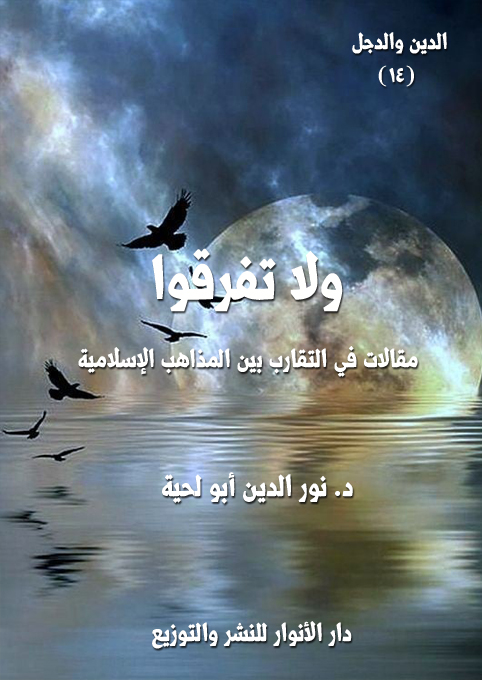
التعريف بالكتاب
عالجت هذه المقالات بطريقة بسيطة بعض القضايا الكبرى التي أوقع الشيطان بسببها الفتنة بين كبرى الطائفتين من المسلمين: السنة والشيعة.. وبينت أن كليهما يحمل صورة خاطئة عن الآخر.. وأن لكليهما جوانب مشرقة.. كما أن لكليهما حظه من الانحراف والبدعة والابتعاد عن الدين الأصيل.
وقد حرصت فيها أن أكون على مسافة واحدة بين الجميع، وما يبدو من الدفاع أحيانا عن جهة من الجهات دون غيرها، فذلك لأني رأيت الحرب معلنة عليها.. والشريعة والأخلاق والقيم النبيلة تدعونا لأن نقف في صف المستضعفين، وألا نخذلهم، ولو بالكلمة والنصيحة.
الكتاب: الطائفيون والحكماء السبعة
المؤلف: أ.د. نور الدين أبو لحية
الناشر: دار الأنوار للنشر والتوزيع
الطبعة: الأولى، 1437 هـ
عدد الصفحات: 128.
للمطالعة: هنا
لمطالعة الكتاب من تطبيق مؤلفاتي المجاني وهو أحسن وأيسر: هنا
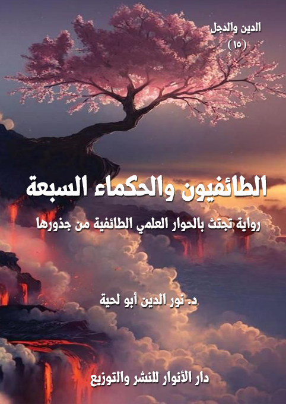
التعريف بالكتاب
هذه الرواية موجهة بالدرجة الأولى لأولئك الإسلاميين ـ حركيين كانوا أو سلفيين ـ الذين تركوا الدعوة للإسلام ـ الذي أردوا احتكاره دون سائر الناس ـ وراحوا يتدنسون بعار الطائفية والحزبية والفرقة.
فصار دورهم الوحيد نشر البغضاء والأحقاد في القلوب، ونشر التفكك والقطيعة في المجتمعات، ونشر الدمار والخراب في الأوطان.
وهي تحاول أن تعيدهم إلى كتاب ربهم، وسنة نبيهم صلى الله عليه وآله وسلم، وهدي الأئمة الطاهرين الذين جعلهم الله ممثلين لدينه، وورثة لنبيه.
وقد وضعتها بشكل رمزي بسيط، ليسهل الاستفادة منها على العامة والخاصة.
الكتاب: عقول معطلة
المؤلف: أ.د. نور الدين أبو لحية
الناشر: دار الأنوار للنشر والتوزيع
الطبعة: الأولى، 1437 هـ
عدد الصفحات: 128.
للمطالعة: هنا
لمطالعة الكتاب من تطبيق مؤلفاتي المجاني وهو أحسن وأيسر: هنا
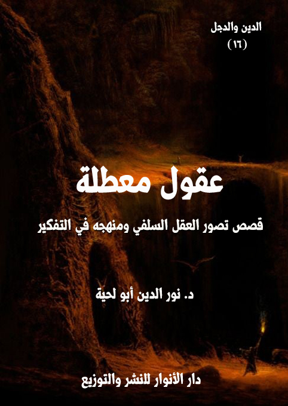
التعريف بالكتاب
هذا الكتاب من الكتب التي حاولت فيها أن أصور الواقع السلفي عن طريق القصص الرمزية والواقعية، لأنه من الصعب التعبير عن الكثير من القضايا الواردة فيه تعبيرا علميا دقيقا من غير استعمال التصوير الأدبي والفني.
ويهدف إلى بيان الجذور التي ينطلق منها التشدد والتطرف والخرافة في العقل السلفي، وهو [التعطيل].. فالعقل السلفي نتيجة انبهاره الشديد بسلفه، وبآثارهم وتراثهم، وخضوعه المطلق لهم، أعطى عقله إجازة أو تقاعدا، بحيث لا يحتاج إلى استعماله، وكيف يحتاج إلى ذلك، وقد كفاه سلفه كل شيء؟
وكيف يحتاج إلى ذلك، وهو يعلم أنه إن غامر واستعمله فسيؤدي به إلى التجهم أو التعطيل أو التصوف أو الرفض أو يتبنى ما تبناه كل من استعملوا عقولهم من المواقف والرؤى؟
الكتاب: أوهام.. وحقائق
المؤلف: أ.د. نور الدين أبو لحية
الناشر: دار الأنوار للنشر والتوزيع
الطبعة: الأولى، 1438 هـ
عدد الصفحات: 128.
للمطالعة: هنا
لمطالعة الكتاب من تطبيق مؤلفاتي المجاني وهو أحسن وأيسر: هنا
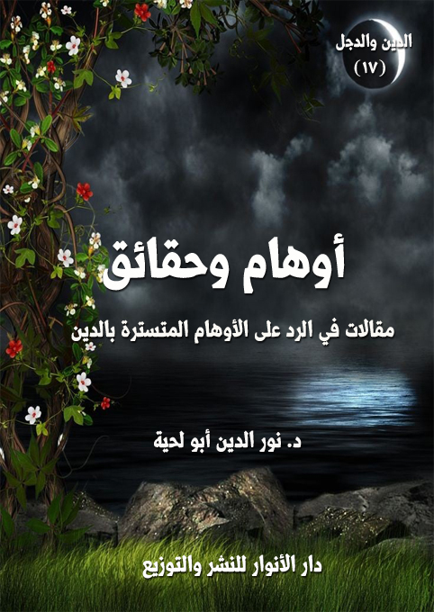
التعريف بالكتاب
هذه مقالات متفرقة تجتمع حول الدعوة إلى شيء واحد، وهو العودة لمصدر الحقيقة الصافية الذي لم يتلبس بوهم، ولم يختلط بهوى، ولم يلم به الشيطان، ولا أذناب الشيطان.
وذلك المصدر المقدس لا يتمثل إلا في الوحي الإلهي المعصوم، والذي جعله الله مرجعا عند التنازع، وعدم التنازع..
لكنه ـ عند تتبع مسار الأمة من خلال تاريخها وتراثها ـ نجد هجرا مقصودا أو غير مقصود لذلك المصدر المقدس، واللجوء بدله إلى الكثير من المصادر الممتلئة بالوهم، وتحت أسماء مختلفة، كالسلف أو الخلف أو الكشف أو الشهود أو الإلهام.. أو غير ذلك من الأسماء.
ولأجل مراعاة كل تلك المصادر البديلة التي زرعت الأوهام في واقعنا وديننا تعرض القرآن الكريم للكثير من التأويل والتعطيل والهجر..
وهذا الكتاب تذكير بالعودة إليه.. وبالبعد عن كل مصادر الأوهام في واقعنا وتراثنا.
الكتاب: دعوها.. فإنها منتنة
الوصف: مقالات حول الشعوبية والقومية والتمييز العنصري
المؤلف: أ.د. نور الدين أبو لحية
الناشر: دار الأنوار للنشر والتوزيع
الطبعة: الأولى، 1439 هـ
عدد الصفحات: 124
للمطالعة: هنا
لمطالعة الكتاب من تطبيق مؤلفاتي المجاني وهو أحسن وأيسر: هنا
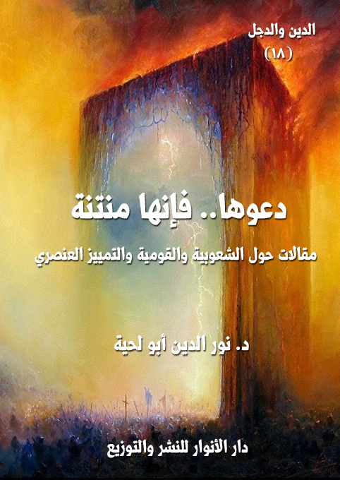
التعريف بالكتاب
ذلك أن الذي نطبق بها ليس صحفيا، ولا كاتبا، ولا باحثا، ولا فيلسوفا، ولا عالم اجتماع، ولا عالم نفس.. بل الذي نطق بها هو من لا ينطق عن الهوى.. رسول الله صلى الله عليه وآله وسلم.. ذلك الذي لا يقول إلا الحق في رضاه أو غضبه..
ولذلك فإنها تعبر عن الحقيقة بكل معانيها وتجلياتها..
فالذي يدعو إلى العصبية والعرقية والهوية التي تميزه عن سائر إخوانه في الإنسانية إنما يدعو في الحقيقة إلى القذارة والنتانة.. ذلك أنه يدعو إلى عالم الطين والحمأ المسنون، ويغفل عن الروح والعوالم العلوية التي صدرت منها.. لذلك تفوح من أحاديثه رائحة الطين والحمأ المسنون..
ولهذا دعا رسول الله صلى الله عليه وآله وسلم إلى الترفع عن هذا العالم، والنظر إلى الإنسان باعتبار جوهره وحقيقته الروحية، لا حقيقته الجسدية التي يؤدي بها دوره التكليفي المؤقت في هذه الحياة الدنيا.
التنويريون والمؤامرة على الإسلام
الكتاب: التنويريون والمؤامرة على الإسلام
الوصف: مقالات تبين الأهداف الحقيقية وراء المشاريع التنويرية
المؤلف: أ.د. نور الدين أبو لحية
الناشر: مؤسسة العرفان للثقافة الإسلامية
الطبعة: الأولى، 1439 هـ
عدد الصفحات: 230
للمطالعة: هنا
لمطالعة الكتاب من تطبيق مؤلفاتي المجاني وهو أحسن وأيسر: هنا
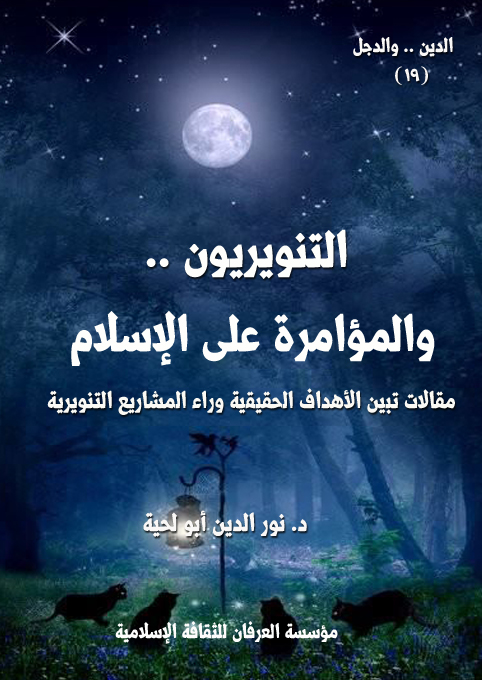
التعريف بالكتاب
يحاول هذا الكتاب بمقالاته المتنوعة أن يوضح للقراء الكرام ذلك التطرف الجديد الذي لبس لباس التنوير، وراح لا يكتفي بمواجهة التطرف الديني، وإنما يقابله بتطرف لا يقل عنه خطرا، وهو التطرف التنويري، الذي يهدف إلى تفريغ الإسلام من جميع محتوياته، وقد قسمته إلى أربعة أقسام:
القسم الأول: التنويريون.. والمؤامرات العالمية: وقد تناولت فيه بعض الحجج والبراهين والوثائق الدالة على عناية بعض الدوائر العالمية بتشجيع هذا النوع من التنوير، لبث الشبه والفتن والتشكيكات بين المسلمين، حتى لا يبقى لهم من الإسلام إلا ذلك الشعار المفرغ من كل معنى.
القسم الثاني: شخصيات.. ومشاريع تنويرية: وقد تناولت فيه نماذج عن شخصيات مختلفة من الحداثيين والقرآنيين وكل من تعلق بهم ممن يدعون التنوير.
القسم الثالث: التنويريون.. وهدم القيم: وقد تناولت فيه بعض مظاهر الهدم للقيم الإسلامية، والأسس التي تقوم عليها، وأول ذلك الإسلام نفسه، والذي حوله هؤلاء التنويريون إلى معنى هلامي يمكن أن يتحقق من دون رعاية لشرائع وعقائده وأخلاقه.
القسم الرابع: التنويريون.. وتمجيد الملاحدة: وقد تناولت فيه ما دفعني إلى كتابته، وهو ذلك التمجيد الذي ارتبط بهوكينغ، والترحم عليه، على الرغم من إلحاده الذي صرح به، بل دعا إليه..
التنويريون والصراعات مع المقدسات
الكتاب: التنويريون والصراعات مع المقدسات
الوصف: ردود علمية على مواقف التنويريين من المقدسات
المؤلف: أ.د. نور الدين أبو لحية
الناشر: دار الأنوار للنشر والتوزيع
الطبعة: الأولى، 1439 هـ
عدد الصفحات: 242
للمطالعة: هنا
لمطالعة الكتاب من تطبيق مؤلفاتي المجاني وهو أحسن وأيسر: هنا
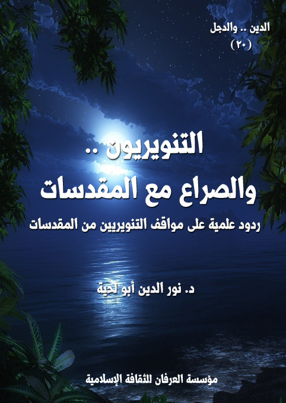
التعريف بالكتاب
من أخطر مظاهر التنوير المعاصر تلك الجرأة على الحقائق المقدسة المعصومة التي وردت في القرآن الكريم أوالسنة الصحيحة القطعية التي لا مجال معها للفكر، ولا للنظر، لأن كل ذلك جرأة على الله، وسوء أدب معه، وتقديم للهوى على النص..
فمن ذا الذي يعطي لنفسه الحق في أن يعقب على كلام ربه، أو كلام رسوله الذي لا ينطق عن الهوى؟.. ومن ذا الذي يتصور أنه أكثر علما وفهما وإحاطة بحقائق الوجود حتى يعطي لنفسه ذلك الحق؟
لكن التنويريين باتجاهاتهم المختلفة أعطوا لأنفسهم هذا الحق؛ فراحوا يناقشون في كل المقدسات التي اتفقت عليها الأمة وأجمعت عليها إجماعا كليا، لا طائفيا، وراحوا لأجل ذلك يلوون أعناق النصوص المقدسة، ويتلاعبون بها ليتحول الدين إلى مزاجهم وأهوائهم ورغباتهم.
ولذلك حاولنا في هذا الكتاب أن نناقش القضايا الكبرى التي تركز عليها الدعوات التنويرية، والتي حاولت بكل الوسائل أن ترفع عنها القداسة، ليصبح الدين مادة هلامية يتلاعب بها كل من هب ودب، وذلك عبر مقالات مختلفة كتبت في أوقات متباينة، وعبر بعض السجالات التي حصلت بيننا وبين بعض التنويريين.